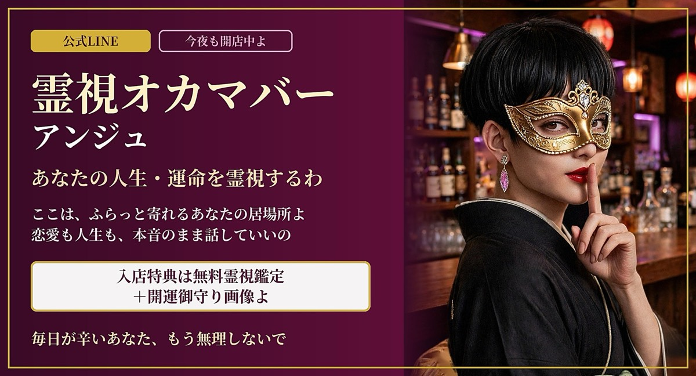
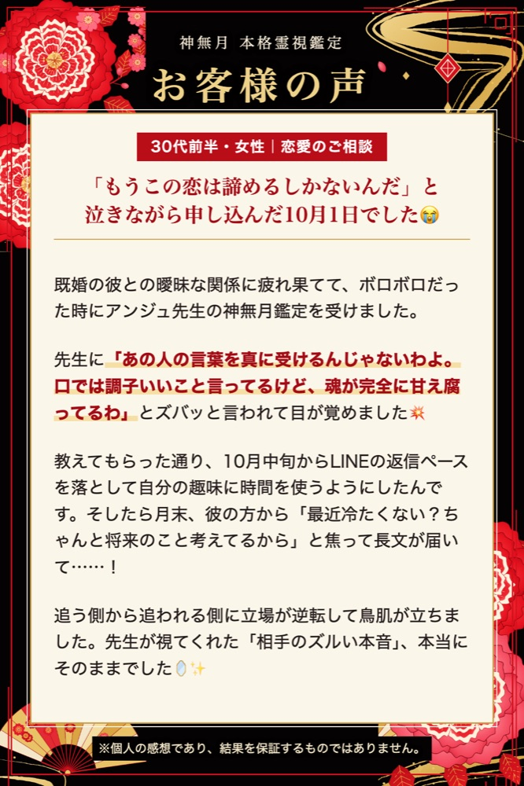
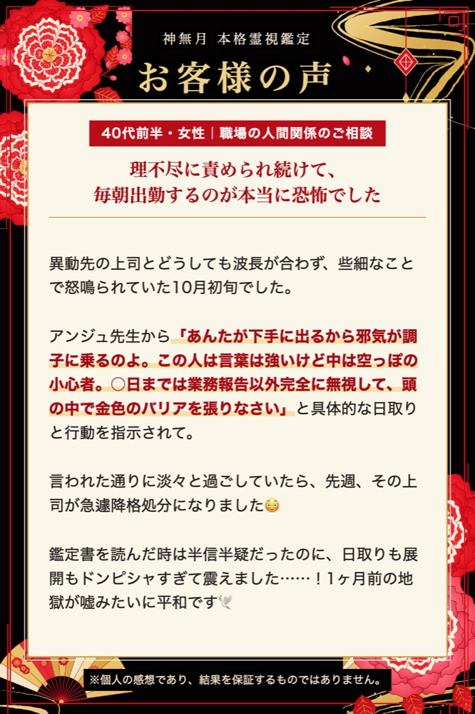
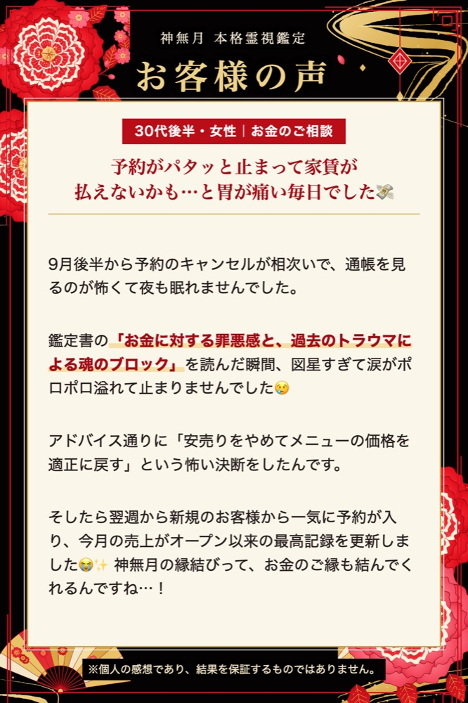
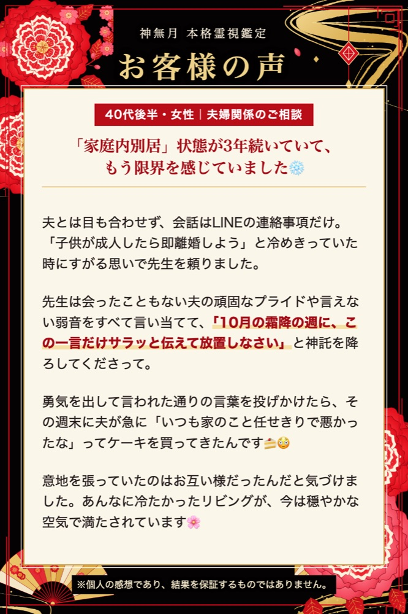

あら、来てくれたのね。
今夜は、あなたの話を
じっくり聞かせてちょうだい。
無料鑑定を受け取ったあなただけの、
7日間だけの特別価格よ
特別価格は、先着5名様までよ
本格運命霊視鑑定 4,980円
本格運命霊視鑑定 通常10,000円 → 4,980円
--まで。再読み込みしても、残り時間は戻らないわ
7日を過ぎたら、通常価格に戻るわよ
いらっしゃい。アンジュよ。
ここは、昼間は誰にも言えないことを、夜にそっと置いていくための霊視オカマバー。ふらっと寄れる、あなたの居場所なの。
同じことを何度も考えて、答えが出ないまま夜になる。
誰かに話したいけれど、身近な人には言えない。
占いアプリの結果を見ても、「で、私の場合はどうなの？」が残ってしまう。
そんな夜、あるでしょう。
あなたの話を聞いて、
あなただけを視る。
それが、本格運命霊視鑑定よ。
LINEで届く言葉や、願いの手紙を読んでいるとね、みんな本当に、ひとりで頑張っているのが伝わってくるの。
本格運命霊視鑑定では、まずあなたの言葉で、いまの状況と迷っていることを教えてもらうわ。そのうえで霊視をして、「いま、どんな流れの中にいるのか」「ここからどう動けばいいのか」を、あなたのためだけの言葉でお届けするの。
オネエをやってるとね、男の本音も、女の本音も、だいたい分かっちゃうのよ。
だから私の鑑定は、あなたが聞きたいことだけを並べる占いじゃないの。そのかわり、あなたの味方でいることは、約束する。
一、あなたの話を否定しない
どんなご相談でも、まず受けとめるわ。「こんなこと聞いていいのかな」は、ここではいらないの。
二、不安をあおらない
良くない流れが視えたときも、どう動けば変えていけるかを一緒にお伝えする。怖がらせて動かすようなことは、しないわ。
三、あいまいに終わらせない
「結局どうすればいいの？」で終わらせない。明日から何をすればいいのかまで、言葉にしてお渡しするわ。
本格運命霊視鑑定では、あなたが今どんな運命の流れの中にいるのか、その流れを止めているものは何なのかを、魂の声から読み解いていくわ。運命が動く時期や、お相手の本音、本来の宿命まで、深いところまで視通していくの。
恋愛・復縁・仕事・人間関係・お金・生き方。
どんなテーマでも、あなたの状況に合わせて視ていくわ。
▼
本格運命霊視鑑定を受ける4,980円・お申し込みは1分ほどひとつでも当てはまったら、
カウンターに座ってちょうだい。
迷うのは、あなたが弱いからじゃないの。それだけ真剣に、自分の人生と向き合っているからよ。
ひとりで考えて出なかった答えは、ひとりで考え続けても、なかなか出ないもの。だから、私に話してみて。
おひとりずつ、私が視るわ。
運命の流れから、転機の時期、本来の宿命まで。
あなたの魂の奥深くまで付き合うわよ。
通常価格 10,000円
7日間限定で、なんと
先着5名様までこの価格は まで
運命の流れから、転機が訪れる時期、本来の宿命まで。あなたの魂の奥深くまで視通す、運命霊視・波動調整のフルセッションよ。人生を本気で動かしたい方へ、おすすめの鑑定です。
「人生を変える覚悟ができた」「運氣を底上げしたい」。そんな方にこそ受けてほしいの。悩みがいくつもつながっている方、同じところで何度もつまずいている方も、こちらで根っこから整えましょう。
お届け：ご相談内容を受け取ってから48時間以内に、LINEで鑑定文を
本格運命霊視鑑定を受ける4,980円・お申し込みは1分ほど申し込むか迷ったら
いまの状況を、そのままLINEに送ってちょうだい。
あなたに合うかどうか、私から返すわ。
お支払いの途中で止まってしまったときも、LINEへどうぞ。

迷ったら、LINEでアンジュに神無月の本格運命霊視鑑定を受けてくださった方から、
いただいたご感想よ。




← 横にスワイプ →
お支払いが終われば、お申し込みは完了よ。
ご購入いただいた方にだけ、本格運命霊視鑑定の専用LINEをお知らせするわ。そこに「本格運命霊視鑑定 申し込み完了」と、ご注文のときのお名前（フルネーム）を送ってちょうだい。私が確認するわ。
・お名前（ニックネームでOK）
・生年月日
・ご相談内容（いまの状況、いちばん知りたいこと）
・お相手がいる場合は、お相手のお名前と生年月日（分かれば）
上手にまとめなくて大丈夫。くわしく教えてくれるほど、深く視られるわ。
あなたのためだけの言葉で書くわ。何度でも読み返してちょうだい。
申し込んで終わり、じゃないの。
あなたの言葉を聞いてから、視はじめるわ。
いま暮らしが苦しくて、このお金を出すために、食費や家賃を削らなきゃいけない人。
今回は、やめておきなさい。
暮らしを削ってまで受けるものじゃないわ。LINEで届くメッセージや、無料の願いの手紙は、これからも続けていくから、まずはそこで元気を取り戻してちょうだい。
状況が変わったら、また声をかけて。このお店は、ちゃんと開けて待ってるから。
暮らしを壊さずに
来られる人は、
いらっしゃい。
このお店にはね、いろんな人が来るの。
好きな人のことで泣いている人。仕事で踏ん張りすぎて、笑い方を忘れちゃった人。家族のために頑張って、自分のことを後回しにしてきた人。
みんな、外では平気な顔をしてるのよ。でも、カウンターに座って一杯目を飲むころには、ぽろっと本音がこぼれるの。
私はその本音を、ちゃんと聞きたい。そして、あなたが明日からまた自分の足で歩けるように、本当のことを、あなたの味方としてお伝えしたいの。
甘いことだけは言わないわ。でも、あなたを一人にはしない。
迷っているあいだも、
夜は来るわ。
だったら今夜は、
私に話していきなさい。
霊視オカマバーアンジュ
▼
本格運命霊視鑑定を受ける本格運命霊視鑑定 4,980円 LINEでアンジュに送る